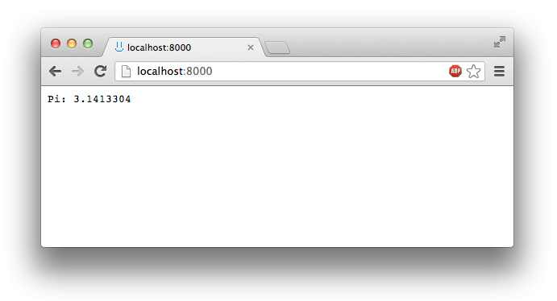
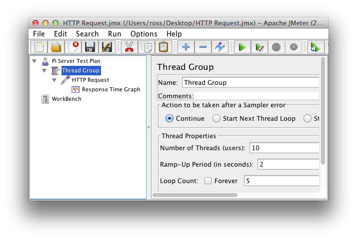
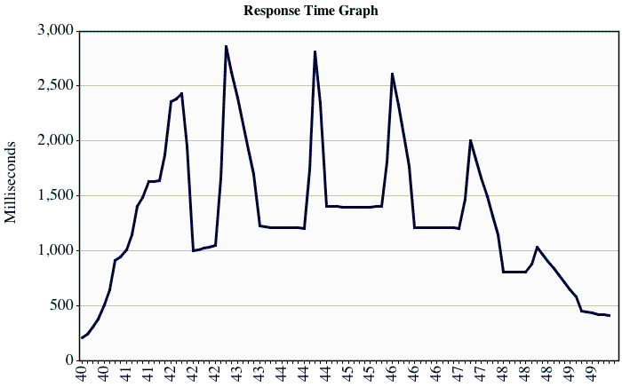
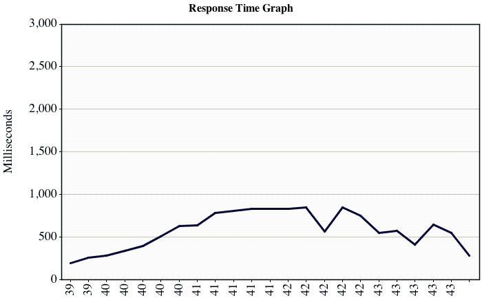

Introduction to Load Balancing Using Node.js - Part 1
by Ross Johnson
2013/07/03
Introduction
At Mazira, a lot of what we develop takes the form of web services. While most of these are only used internally, it is still important that they are high-performance and resilient. These services need to be ready to churn through hundreds of gigabytes of documents at a moment’s notice, say, for example, if we need to reprocess one of our document clusters. For this type of performance, the ability of the system to scale, and to balance the load, is essential. This post introduces the topic of horizontal scaling and load balancing, and provides simple examples using node.js, along with JMeter results to show the performance effects of a common balancing technique.
Horizontal Scaling
When it comes to increasing the performance of websites and web services, there are only a couple of options: increase the efficiency of the code, or scale up the server infrastructure. Improving efficiency will only go so far, so at some point scaling is likely required. When it comes to scaling, there are two options: vertical scaling, or horizontal scaling. Vertical scaling means getting more powerful servers, with higher processing speed and more memory, while horizontal scaling means spreading the load across multiple individual servers. Vertical scaling will only go so far, and may not be cost effective. Horizontal scaling is a much more effective way of improving performance, and has much greater potential for future increases.
The Example
In order to demonstrate load balancing, we first need a sample application. I have chosen to create a web server that responds to any request with an estimation of pi. This estimation is calculated using Monte-Carlo integration, which is an iterative approach. This example, while contrived, demonstrates load balancing well as the pi calculation simulates a non-trivial task that takes some processing time.
Listing 1: pi-server.js
var args = process.argv.splice(2);
var http = require('http');
/**
* This function estimates pi using Monte-Carlo integration
* https://en.wikipedia.org/wiki/Monte_Carlo_integration
* @returns {number}
*/
function estimatePi() {
var n = 10000000, inside = 0, i, x, y;
for ( i = 0; i < n; i++ ) {
x = Math.random();
y = Math.random();
if ( Math.sqrt(x * x + y * y) <= 1 )
inside++;
}
return 4 * inside / n;
}
// Create a basic server that responds to any request with the pi estimation
var server = http.createServer(function (req, res) {
res.writeHead(200, {'Content-Type' : 'text/plain'});
res.end('Pi: ' + estimatePi());
});
// Listen to a specified port, or default to 8000
server.listen(args[0] || 8000);
To run this example, put it into a file pi-server.js, browse to the folder in a command line and then execute:
$ node pi-server.js 8000
Now, going to localhost:8000 in a web browser produces the following result:

Load Testing
Now that we have our pi server running, it is time to load test it to get a baseline for performance. For this task I will be using Apache JMeter, which is a great tool for all sorts of automated behavior and performance testing. For the tests in this article, I set up JMeter to use 10 threads ("users"), each making 5 requests to localhost:8000 (shown in Figure 2). For more information about JMeter and setting it up for load testing, see this blog post.
The metric that we will be using to test the performance of our server is the response time, or the time between when the client makes the request and when the pi result comes back. Shown in Figure 3 is the response time graph of our single-server setup.


This graph provides many key pieces of information. For one, the initial response times are less than 500 ms, which give an indication of the actual processing time required to estimate pi. Since JavaScript applications are only single threaded, our pi server can only be estimating pi once at any given time. Thus, if it gets multiple requests in quick succession, the later requests will take longer, as they can only process once the earlier requests have finished. From the graph, we can see that a number of responses took more than 2.5 seconds to return. These high response times are much higher than the actual time required to estimate pi, and indicate that the server is heavily loaded.
Distributing the Load
As I mentioned earlier, the server can only calculate pi requests one at at time, so how then can we improve the performance? The answer is to have multiple pi-servers running, and to distribute the requests between them. This will work well even on my laptop, as it has multiple cores which the separate pi servers can run on, but one can imagine the load actually being distributed across multiple physical machines.
In order to distribute the load of our pi example, we will create a node.js load balancer which sits in front of our actual pi-servers, and passes the requests on to them in a round-robin fashion. That is, the first request will get forwarded to the first pi-server, the second request will get forwarded to the 2nd pi-server and so on, until we run out of pi-servers and start forwarding to the first one again.
For this example, I will be running 3 pi-servers on ports 8001, 8002, and 8003. The load balancer will be listening on port 8000, so we will not have to change the JMeter test. To handle the actual forwarding of requests in our load balancer, we will be using the wonderful node-http-proxy module. Below is the code listing for the load balancer.
Listing 2: load-balancer.js
var arguments = process.argv.splice(2);
var httpProxy = require('http-proxy');
//
// Addresses to use in the round robin proxy
//
var addresses = [
{
host: 'localhost',
port: 8001
},
{
host: 'localhost',
port: 8002
},
{
host: 'localhost',
port: 8003
}
];
var i = 0;
httpProxy.createServer(function (req, res, proxy) {
proxy.proxyRequest(req, res, addresses[i]);
i = (i + 1) % addresses.length;
}).listen(arguments[0] || 8000);
Now we will start up the 3 pi-servers and the load balancer.
$ node pi-server.js 8001 &
$ node pi-server.js 8002 &
$ node pi-server.js 8003 &
$ node load-balancer.js 8000
Note that the "&" at the end of the commands causes the processed to run in the background. The processes must be killed manually later.
Now, we can make requests to the individual pi-servers on ports 8001, 8002, or 8003, or we can make a request to the load balancer on port 8000. Running the JMeter test again, we can see a dramatic increase in performance (decrease in average response time) using our load balancer. A graph of the response time is shown in Figure 4.

By distributing the load between three separate pi-servers, we were able to drastically drop the average response time for our load-test and to decrease the maximum response time from nearly three seconds to under one second.
Further Improvements
Although we have drastically improved the overall performance of our application, our current solution is far from perfect. For one, the load balancer must be hard-coded with the location of the individual pi-servers. This is not ideal, as the balancer must be edited and restarted to add an additional pi-server. Additionally, if one of the pi-servers were to crash, the round-robin approach would still send it requests, causing every 3rd request to fail. A better solution would be to have the load balancer automatically discover pi-servers that are running, and to balance the load between those. Then, additional pi-servers can be started without touching the load balancer. This can be accomplished easily using the seaport module for node.js. A discussion of this will be saved for a future post.
EDIT: Part 2